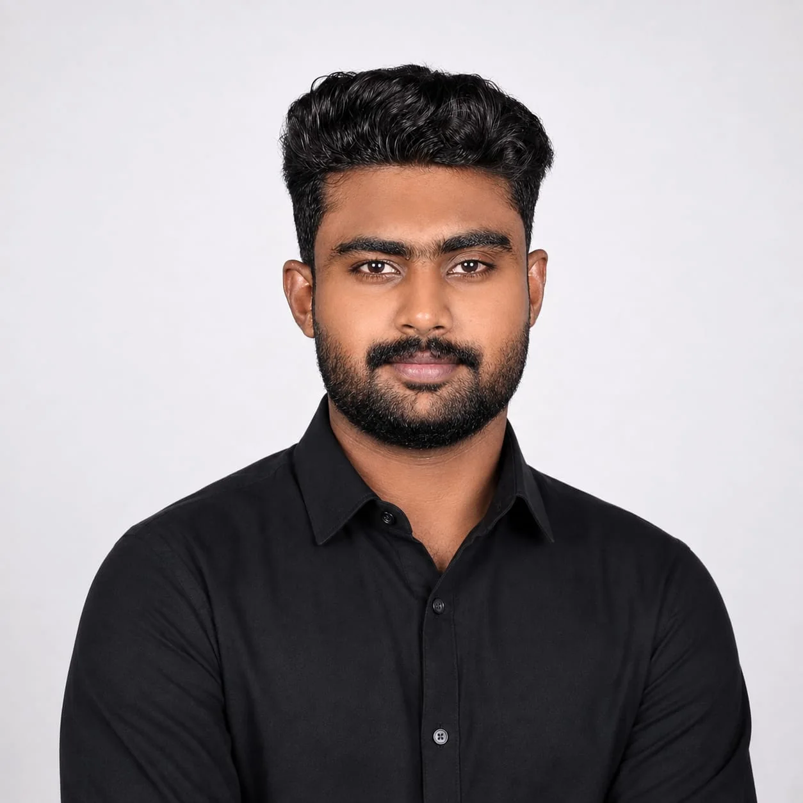
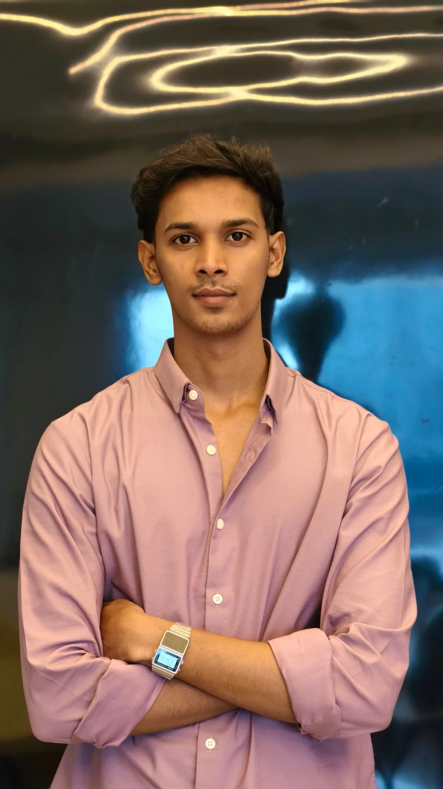

For approval
Co-founders section – 4 layout options
Each option uses the same About Us colours and fonts. Pick one and it will be added to the About Us page, just after the story. In option 1, text in grey italics is a placeholder for a short line about each founder.
1Editorial rows— magazine style, room for a short line about each person
Leadership
Two friends, one shared ambition

01
Co-Founder & CFO
Mohammed Yasir
Two or three sentences about Yasir – background, what he leads at Oceanhold, and what he values in a partnership.

02
Co-Founder & CMO
Muhammed Jaseer
Two or three sentences about Jaseer – background, what he leads at Oceanhold, and what he values in a partnership.
2Dark band, round portraits— premium and minimal; photos turn to colour on hover
Founders
The people behind every partnership
Building Oceanhold on trust, one relationship at a time.
Muhammed Jaseer
Co-Founder & CMO3Dark band, rounded-square portraits— same as 2, with soft-cornered square photos
Founders
The people behind every partnership
Building Oceanhold on trust, one relationship at a time.
Mohammed Yasir
Co-Founder & CFOMuhammed Jaseer
Co-Founder & CMO4Story card— both founders together, tied to the “two friends” story
Our Founders
It started as a conversation between two friends
“Good business is built through relationships.”
Mohammed YasirCo-Founder & CFO
Muhammed JaseerCo-Founder & CMO